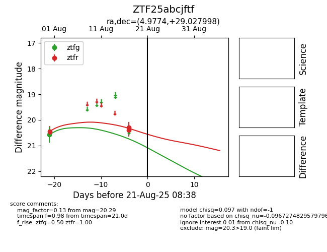

Target ZTF25abcjftf at 2025-08-21 08:38, see:
FINK: fink-portal.org/ZTF25abcjftf
Lasair: lasair-ztf.lsst.ac.uk/objects/ZTF25abcjftf
ALeRCE: alerce.online/object/ZTF25abcjftf
alt names
ZTF25abcjftf (ztf,alerce)
coordinates:
equatorial (ra, dec) = (4.9774,+29.02800)
galactic (l, b) = (114.6800,-33.33806)
photometry
last ztfg=20.58, ztfr=20.29
1 ztfg, 3 ztfr detections
